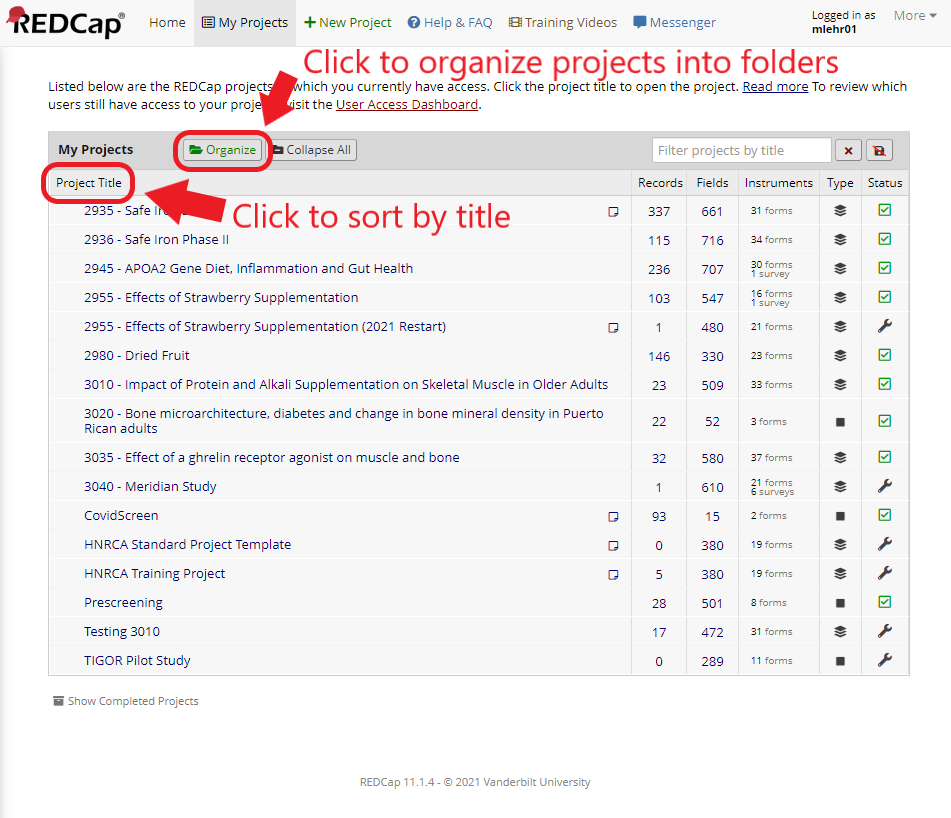
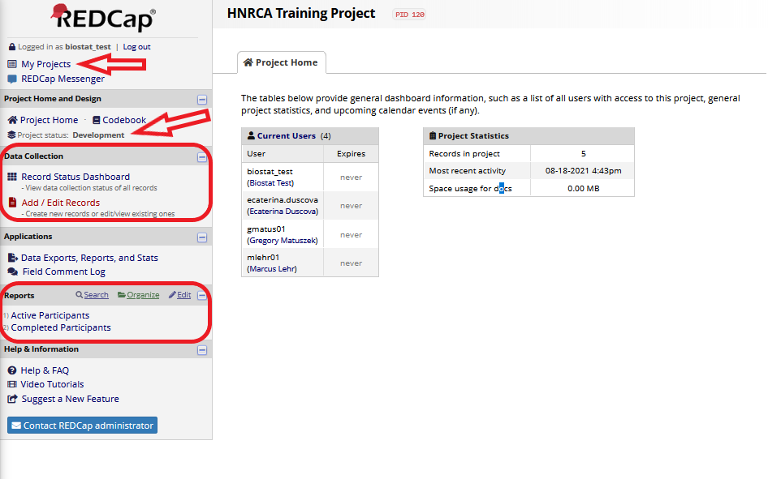

3 Navigating Projects
Once you’ve logged into Redcap, you’ll be greeted with the ‘My Projects’ page. This page contains a list of all the projects you have access to. You can sort the projects by clicking any of the table headers (eg ‘Project Title’) or you can click the Organize button above the table to create folders and add your projects to them.

3.1 Left-hand side bar
Once you’ve selected a project. You’ll be taken to that project’s home page. The project can navigated via the links in the left-hand side bar. The primary pages for accessing project data are under the Data Collection and Reports headings in the side bar. The Record Status Dashboard displays all project data (with optional filters) and the View / Edit Records or Add / Edit Records (will vary depending on your permissions) is used for navigating to individual records. The Reports are subsets of the project data meant for easy viewing.
Also note the project status. This will generally say ‘Development’ or ‘Production’. Development means the project is still being revised and not yet ready for (real) data entry. When the project says Production, it has been finalized and is ready for entry of participant data.
Additionally, at the top of the left-hand side bar is link to return to your projects page.

3.2 Locating record data
3.2.1 Finding individual records
To go to an individual record within a project, click Add / Edit Records in the left-hand side bar. This link may appear differently depending on your permissions within the project. For example, if you don’t have permissions to create new records this link will be displayed as View / Edit Records. Once on the page you have several options for locating records in the project.
If you know the subject’s HNRC ID, then you can select the drop-down in the Choose an existing HNRC ID field. Once you’ve selected the drop-down, you may also begin typing the ID number to jump to it in the list. If you have create records privileges, there will also be a box below that where you can enter a new or existing HNRC ID. This box will offer suggestion from existing IDs as you type, or you can enter a new one. Either of these methods will take you to a record’s Record Home Page.

If you don’t know the subject’s ID number and need to search by name or other information, you can use the Data Search section of the page. If desired, you can select a specific field within the project to search. However, generally this is unnecessary and you can simply enter information into the Search query box. As you type, results will be displayed in a drop-down menu. Note that unlike typing in a subject’s ID number, clicking any of the results links will take you to the specific where that data was found. For example, if you are searching by name and names were collected at screening in the visit information form, that is where you’ll be taken. To navigate from there to a Record Home Page you can simply click the subject’s HNRC ID number in the left-hand side bar.

Once on a form page for a particular record and event, the left-hand side bar will provide links for other forms within that event so that you can easily step through filling out information for a subject. Additionally, the ID number will be displayed above the form links. Clicking the ID number will take you back to that record’s Home Page.

3.2.2 Record Home Page
The record home page displays a table showing all of data for a record. Each row of the table represents a data form, listed in the ‘Data Collection Instrument’ column, and each other column represents a visit, listed in the column headings. To access a data form, simply click on the status icon in the table corresponding to the form and visit you’re interested in. Additionally, any repeat forms (with data) will be listed below the table.

3.2.3 Record Status Dashboard
Additionally, you can click the Record Status Dashboard link in the left-hand pane to view all of the study data in a single table. This table displays a record in each row (listed in the HNRC ID column) and the form/event combinations are displayed in the table columns. Once again, if you would like to go into a particular data form, simply click the status icon associated with the record and form you’re interested in. If you would like to view a Record Home Page, you can click the HNRC ID number in the first column. If you have create records privileges, you will also see a box above the table where you can enter a new HNRC ID number to create a new record.

3.3 Redcap Tables
Redcap tables are found on both Record Home Page’s and the Record Status Dashboard.
3.3.1 Table colors
Redcap tables are filled with status icons representing specific data forms. The color of the status icon represents the completion status of the form. A legend describing the status colors is displayed at the top right of any page with a table.
If the icon is gray, that means that no data has been entered into the form. If data has been entered into the form, the icon will be colored according to the form status. The colors are red, yellow, and green which refer to a form status of incomplete, unverified, or complete, respectively. A form’s status is controlled manually by a special field at the end of every form. This means it is up to the users entering the data to the set the status of a form. Furthermore, if there is a repeating form where one or more of the repeats have a different status, the icon will be filled blue.
3.3.2 Table scrolling
Another note about tables is scrolling. By default, tables are ‘floating’ and contain their own set of scroll bars, separate from the main page/browser scroll bars. If you find this cumbersome, you can click the gray Table not displaying properly link just above the table on the right-hand side. This will embed the table into the page so it does not have separate scroll bars.
3.3.3 Repeating forms
Some forms can have more than one instance per event. In these cases, once data has been entered into a form, a plus sign will appear to the right of status icon. Clicking the plus sign will take you to a new instance of that form where you can enter new data. Once there are multiple instances of a form, the status icons will appear stacked. Clicking the icon stack will display a list of all of the form instances. Furthermore, once you’ve clicked on a form, there will be a Current instance drop down at the top of the page which allows you to switch between instances or create a new one.